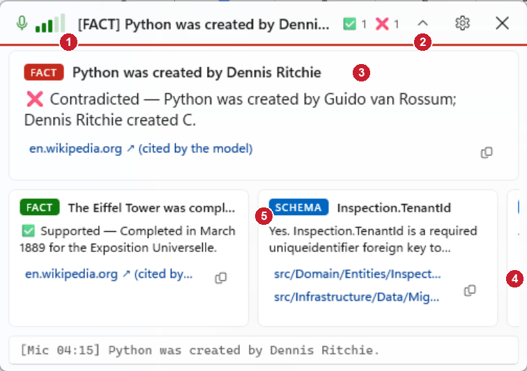
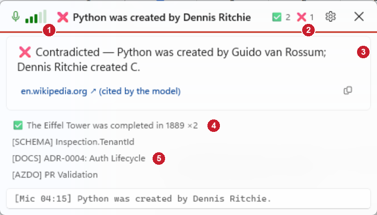
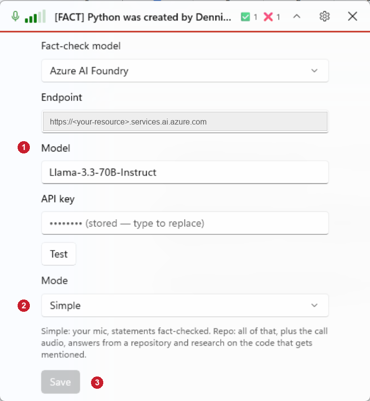
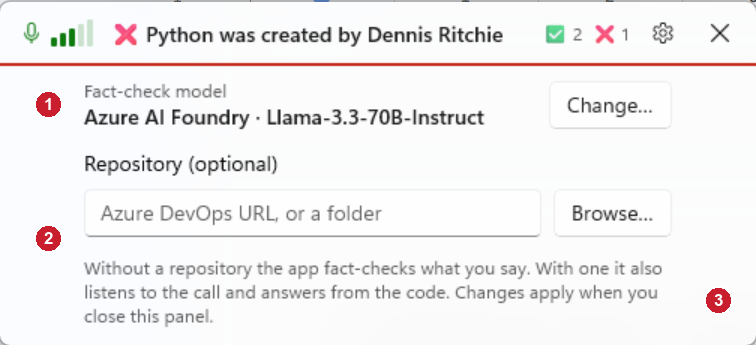
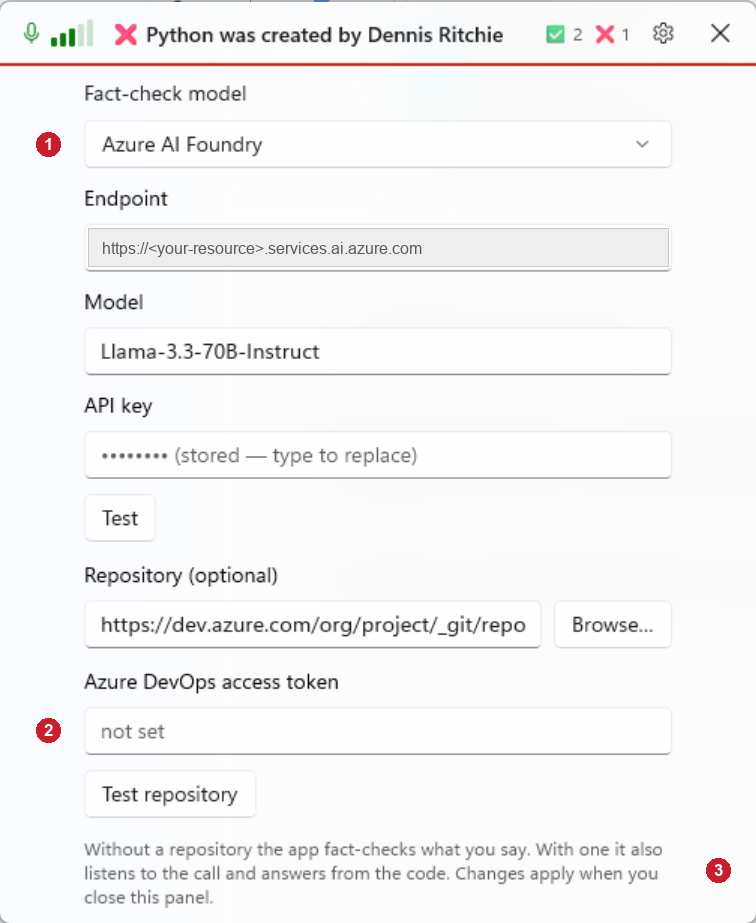

Simpler HUD and settings
Seven of the ten simplification ideas, applied: no repeated claim, repeats merged, a history list, shorter status, no chevron, no Save button, and settings folded down to a model line and an optional repository. All pictures are Debug builds with sample data, at 150 % display scaling. The red numbers match the notes under each picture.
1. The HUD
Before

- The pill showed the source tag and the claim, but not the verdict. Status text read "Mic · Fact check · Listening (mic)".
- A chevron button, although clicking the pill already opens and closes the panel.
- The card repeated the claim as its title, under the same words in the pill.
- Earlier cards scrolled sideways and ran off the right edge.
- Saying something twice made two cards.
After

- The pill carries the verdict and the claim. When there is no card it says just "Listening" (or "Listening to you and the call" with a repository).
- No chevron: click the pill, or press Ctrl+E, to open or close the panel. Esc still closes it.
- The card holds only what the pill cannot: the reason, the link and copy.
- Something said again is the same line with a count ("×2"), not a second card.
- Earlier cards are one line each. Click a line to make it the main card; hover for its answer.
2. Settings
Before

- Four model fields on show every time, even though they are set once.
- A Mode dropdown to choose between Simple and Repo.
- A Save button to press before anything took effect.
After

- A model that is set up is one line. Change… unfolds the same fields as before (next picture).
- No Mode dropdown. Filling in a repository is what turns on the call audio and the answers from the code; leaving it empty is the simple fact-checking mode.
- No Save button. Changes apply when the panel closes. If something typed is invalid, nothing is changed and the pill says why.
3. Settings with everything unfolded
After pressing Change… and entering a repository

- The model fields and Test, exactly as they were. They fold back to one line once a working model has been applied.
- The access token and Test repository appear only once a repository is entered.
- The one line of explanation, in place of the Mode description and the Save button.
The endpoint is blanked in the pictures because it names a private Azure resource. These pictures show the settings inside the window (a Debug-only view); in the app they open as a flyout from the gear.